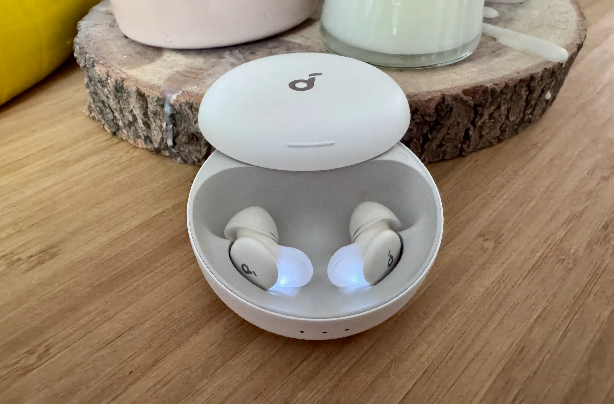

Review of the Soundcore A30 Sleepbuds
Note: The purchase was from August/September, I just never had the time to make a blog for it :)
I often discuss my sleep problems and, now that I have income from internships and fellowships, I am willing to invest more in finding solutions.
Previously, I purchased the $70 Manta Sleeping Mask; building on that, this time I made another pricy purchase for a product I’ve always wanted: Sleeping Earbuds.
I am sensitive to sound when sleeping, so I have always worn foam earplugs. However, I also have mild tinnitus that worsens when the earplugs block all external noise. Another option is to use headphones or earbuds and play white noise when I sleep. The issue is that headphones are way too bulky for me to sleep comfortably. I always say I sleep like a rotisserie chicken because I love moving and rolling in my sleep, which doesn’t work with a heavy device on my head. Most importantly, I am a side sleeper, and sleeping with headphones always makes me scared of breaking them.
I’ve always wondered: Is there a product that is lightweight, blocks external noise, and can also play white noise or other sounds to help me sleep better?
I was scrolling the internet one day, and an ad caught my attention. It said the Soundcore A30 Sleeping earbuds are being crowdfunded! I’ve used Soundcore products for a while now, and I’ve also heard a lot of good things about the A20 earbuds, so I decided to pre-purchase one right away. I wasn’t the earliest, but I still saved $70 from the crowdfunding, bringing the final price to $159.
After a couple of weeks of waiting, the earbuds finally came. The white, round casing had a frosted texture, which makes it feel extra premium. Moreover, the earbuds are really small and comfortable! They were designed so side sleepers can use them while sleeping, with the entire earbud fitting inside your ear.

(Note: the picture is not mine. I got it from here)
As for the earbud itself, it has two modes: local and Bluetooth. Local plays audio (e.g., white noise) you need to download beforehand, while Bluetooth lets you play any audio you want in real time. In practice, I exclusively use the local mode because Bluetooth mode drains the battery quickly, often not lasting the entire night.
Apparently, the earbuds also have Adaptive Noise Canceling (ANC), but I can’t really tell the difference, especially compared to the very strong ANC from my Sony XM6s. It also drains the battery very fast, so I do not recommend enabling that option.
Now let’s talk about the app. There’s quite a lot of weird fluff in the app (like, AI-powered sounds???), but some features are pretty helpful for me. First of all, you can set the earbuds to stop playing when they detect you have fallen asleep, which can save battery in the long term and is generally good for your ears. Moreover, the earbuds can actually detect your sleep quality and generate sleeping reports! I wouldn’t say it’s the most accurate, but it’s interesting to see that I rolled 52 times in a night :) There is also an in-built white-noise maker that’s pretty convenient to use and try out.
However, the earbuds are not without their issues: It’s pretty annoying to adjust the volume, especially since the only way to do so in local mode is to quickly tap the earbuds 3 times. The issue is that you usually need to do this 5~7 times to get to the right volume, and the earbud often only registers me clicking 2 times, which instead switches the earbud mode.
Apart from that, I am still very satisfied with my purchase, and I believe the product counterfactually improved my sleeping quite a bit. I recommend it to any side sleepers with similar issues!